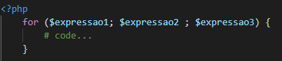
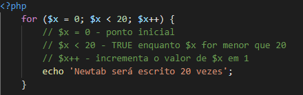
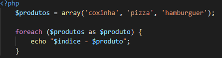
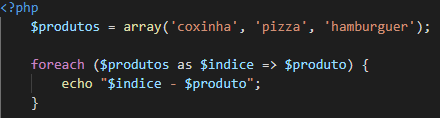
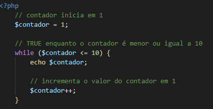
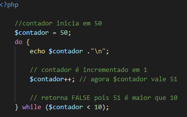
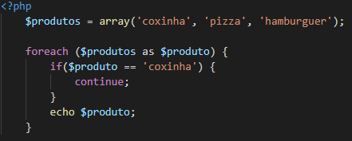

A estrutura for nos permite fazer um loop para repetir um determinado trecho de código, definindo um ponto inicial e final. Observe a sintaxe abaixo:
$expressao1 representa o ponto de partida do laço, que será executado apenas na primeira iteração;
$expressao2 será uma expressão booleana, que caso resulte em TRUE, prosseguirá com a execução do trecho de código a ser repetido;
$expressao3 é uma expressão executada ao fim de cada iteração e geralmente atualiza o valor da variável utilizada na $expressao2.
A estrutura foreach é mais indicada para percorrer arrays e objetos:
A cada iteração, o elemento atual será atribuído a variável $produto e ao fim da iteração, caso exista mais um elemento, o loop continuará sendo executado.
Para resgatar o índice do elemento atual, utilizamos essa sintaxe:
Considerado o mais simples, o laço while executa um trecho de código enquanto a expressão avaliada resultar TRUE.
NOTA: Visto que o while valida a expressão antes de tudo, se a primeira expressão resultar em FALSE, o trecho de código dentro do laço nunca será executado.
Já o laço de repetição dowhile, valida a expressão apenas ao final da iteração. Dessa forma, o código a ser repetido será executado pelo menos uma vez. Exemplo:
A próxima iteração do código acima não existirá, pois a validação do dowhile resultou em FALSE.
NOTAS:
No exemplo abaixo, o $produto de valor “coxinha” não será impresso:
